Продолжаем изучать элементарные задачи по математике. Данный урок посвящен задачам на дроби.
Прежде чем решать задачи на дроби, необходимо досконально изучить все темы, касающиеся дробей. Ниже приведен список уроков, которые можно повторить.
Каждая задача, приведенная в данном уроке, относится к категории элементарных. Если какая-то задача непонятна, это указывает на то, что предыдущий материал усвоен недостаточно хорошо.
Задачи на дроби
Задача 1. В классе  школьников составляют отличники. Какую часть составляют остальные? Сделать графическое описание задачи. Рисунок может быть любым.
школьников составляют отличники. Какую часть составляют остальные? Сделать графическое описание задачи. Рисунок может быть любым.
Решение
Если  составляют отличники, то
составляют отличники, то  составляют остальные
составляют остальные
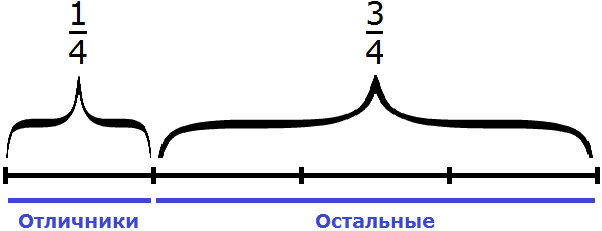
Задача 2. В классе школьников составляют отличники,
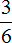
составляют хорошисты,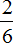
составляют троечники. Сделать графическое описание задачи. Рисунок может быть любым.Решение
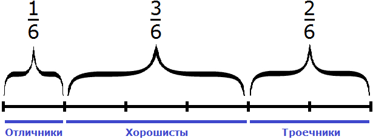
Задача 3. В классе 24 школьника. школьников составляют отличники, составляют хорошисты, составляют троечники. Сколько в классе отличников, хорошистов и троечников?
Решение
В данной задаче требуется найти дроби , и от числа 24.
Находим дробь от числа 24:
24 : 6 × 1 = 4 × 1 = 4 (отличника)
Находим дробь от числа 24:
24 : 6 × 3 = 4 × 3 = 12 (хорошистов)
Находим дробь от числа 24:
24 : 6 × 2 = 4 × 2 = 8 (троечников)
Проверка
4 + 12 + 8 = 24 (школьника)
24 = 24
Задача 4. В классе школьников составляют отличники, составляют хорошисты. Какую часть составляют троечники?
Решение
Школьники разделены на 6 частей. На одну из частей приходятся отличники, на три части — хорошисты. Нетрудно догадаться, что на остальные две части приходятся троечники. Значит школьников составляют троечники
Не приводя рисунков можно сложить дроби и , и полученный результат вычесть из дроби , которая выражает всю часть школьников. Другими словами, сложить отличников и хорошистов, затем вычесть этих отличников и хорошистов из общего количества школьников
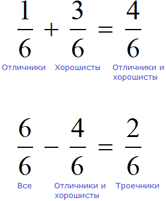
Задача 5. В классе 16 школьников. Из них  составляют отличники,
составляют отличники,
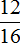
составляют хорошисты. Сколько отличников и хорошистов в классе? Сделать графическое описание задачи. Рисунок может быть любым.Решение
В данной задаче количество школьников выражается разными дробями. Но речь всё равно идет об одном и том же числе школьников.
Находим дробь  от числа 16:
от числа 16:
16 : 4 × 1 = 4 × 1 = 4 (отличника)
Находим дробь от числа 16:
16 : 16 × 12 = 1 × 12 = 12 (хорошистов)
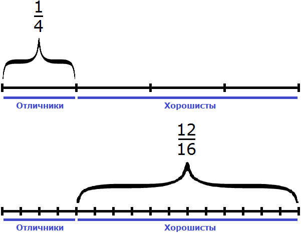
Задача 6. В классе 16 школьников. Из них составляют отличники,
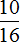
составляют хорошисты,Решение
Здесь как и в прошлой задаче количество школьников выражается разными дробями. Но речь всё равно идет об одном и том же числе школьников.
16 : 8 × 1 = 2 × 1 = 2 (отличника)
16 : 16 × 10 = 1 × 10 = 10 (хорошистов)
16 : 4 = 4 (троечника)
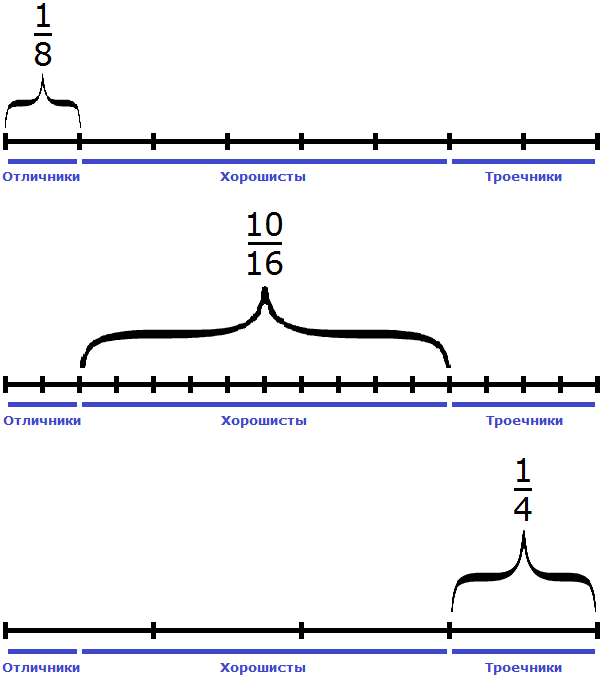
Задача 7. Из зерен пшеницы производят полтавскую крупу, масса которой составляет
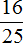
массы зерна пшеницы, а остальное составляют кормовые отходы. Сколько можно получить полтавской крупы и кормовых отходов из 500 центнеров пшеницыРешение
Найдем от 500 центнеров:
Теперь найдем массу кормовых отходов. Для этого вычтем из 500 ц массу полтавской крупы:
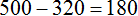
Значит из 500 центнеров зерен пшеницы можно получить 320 центнеров полтавской крупы и 180 центнеров кормовых отходов.
Задача 8. Килограмм сахара стоит 88 рублей. Сколько стоит  кг сахара?
кг сахара?  кг? кг?
кг? кг?
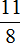
кг?Решение
1)  кг это половина одного килограмма. Если один килограмм стоит 88 рублей, то половина килограмма будет стоит половину от 88, то есть 44 рубля. Если найти половину от 88 рублей, мы получим 44 рубля
кг это половина одного килограмма. Если один килограмм стоит 88 рублей, то половина килограмма будет стоит половину от 88, то есть 44 рубля. Если найти половину от 88 рублей, мы получим 44 рубля
88 : 2 = 44
44 × 1 = 44 рубля
2)  кг это четверть килограмма. Если один килограмм стоит 88 рублей, то четверть килограмма будет стоит четверти от 88 рублей, то есть 22 рубля. Если найти
кг это четверть килограмма. Если один килограмм стоит 88 рублей, то четверть килограмма будет стоит четверти от 88 рублей, то есть 22 рубля. Если найти  от 88 рублей, мы получим 22 рубля
от 88 рублей, мы получим 22 рубля
88 : 4 = 22
22 × 1 = 22 рубля
3) Дробь означает, что килограмм разделен на восемь частей, и оттуда взято три части. Если один килограмм стоит 88 рублей, то стоимость трех восьми килограмм будут стоить от 88 рублей. Если найти от 88 рублей, мы получим 33 рубля.
4) Дробь означает, что килограмм разделен на восемь частей, и оттуда взято одиннадцать частей. Но невозможно взять одиннадцать частей, если их только восемь. Мы имеем дело с неправильной дробью. Сначала выделим в ней целую часть:
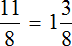
Одиннадцать восьмых это один целый килограмм и килограмма. Теперь мы можем по отдельности найти стоимость одного целого килограмма и стоимость трёх восьмых килограммов. Один килограмм, как было указано выше стоит 88 рублей. Стоимость кг мы также находили и получили 33 рубля. Значит кг сахара будет стоит 88+33 рубля, то есть 121 рубль.
Стоимость можно найти не выделяя целой части. Для этого достаточно найти от 88.
88 : 8 = 11
11 × 11 = 121
Но выделив целую часть можно хорошо понять, как сформировалась цена на кг сахара.
Задача 9. Финики содержат
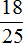
сахара и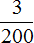
минеральных солей. Сколько граммов каждого из веществ содержится в 4 кг фиников?Решение
Узнаем сколько граммов сахара содержится в одном килограмме фиников. Один килограмм это тысяча грамм. Найдем от 1000 грамм:
1000 : 25 = 40
40 × 18 = 720 г
В одном килограмме фиников содержится 720 грамм сахара. Чтобы узнать сколько грамм сахара содержится в четырех килограммах, нужно 720 умножить на 4
720 × 4 = 2880 г
Теперь узнаем сколько минеральных солей содержится в 4 килограммах фиников. Но сначала узнаем сколько минеральных солей содержится в одном килограмме. Один килограмм это тысяча грамм. Найдем от 1000 грамм:
1000 : 200 = 5
5 × 3 = 15 г
В одном килограмме фиников содержится 15 грамм минеральных солей. Чтобы узнать сколько грамм минеральных солей содержится в четырех килограммах, нужно 15 умножить на 4
15 × 4 = 60 г
Значит в 4 кг фиников содержится 2880 грамм сахара и 60 грамм минеральных солей.
Решение для данной задачи можно записать значительно короче, двумя выражениями:
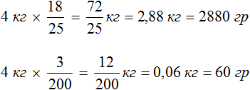
Суть в том, что от 4 килограмм нашли и полученные 2,88 перевели в граммы, умножив на 1000. Тоже самое сделали и для минеральных солей — от 4 кг нашли и получившиеся килограммы перевели в граммы, умножив на 1000. Обратите также внимание на то, что дробь от числа найдена упрощенным способом — прямым умножением числа на дробь.
Задача 10. Поезд прошел 840 км, что составляет  его пути. Какое расстояние ему осталось пройти? Каково расстояние всего пути?
его пути. Какое расстояние ему осталось пройти? Каково расстояние всего пути?
Решение
В задаче говорится, что 840 км это  от его пути. Знаменатель дроби
от его пути. Знаменатель дроби  указывает на то, что весь путь разделен на семь равных частей, а числитель указывает на то, что четыре части этого пути уже пройдено и составляют 840 км. Поэтому, разделив 840 км на 4, мы узнаем сколько километров приходится на одну часть:
указывает на то, что весь путь разделен на семь равных частей, а числитель указывает на то, что четыре части этого пути уже пройдено и составляют 840 км. Поэтому, разделив 840 км на 4, мы узнаем сколько километров приходится на одну часть:
840 : 4 = 210 км.
А поскольку весь путь состоит из семи частей, то расстояние всего пути можно найти, умножив 210 на 7:
210 × 7 = 1470 км.
Теперь ответим на второй вопрос задачи — какое расстояние осталось пройти поезду? Если длина пути 1470 км, а пройдено 840, то оставшийся путь равен 1470−840, то есть 630
1470 − 840 = 630
Задача 11. Одна из групп, покорившая горную вершину Эверест, состояла из спортсменов, проводников и носильщиков. Спортсменов в группе было 25, число проводников составляло  числа спортсменов, а число спортсменов и проводников вместе лишь 9/140 числа носильщиков. Сколько было носильщиков в этой экспедиции?
числа спортсменов, а число спортсменов и проводников вместе лишь 9/140 числа носильщиков. Сколько было носильщиков в этой экспедиции?
Решение
Спортсменов группе 25. Проводников составляет  числа спортсменов. Найдем
числа спортсменов. Найдем  от 25 и узнаем сколько в группе проводников:
от 25 и узнаем сколько в группе проводников:
25 : 5 × 4 = 20
Спортсменов и проводников вместе — 45 человек. Это число составляет
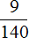
от числа носильщиков. Зная что от числа носильщиков это 45 человек, мы можем найти общее число носильщиков. Для этого найдем число по дроби:45 : 9 × 140 = 5 × 140 = 700
Задача 12. В школу привезли 900 новых учебников, из них учебники по математике составляли
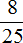
всех книг, учебники по русскому языку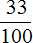
всех книг, а остальные книги были по литературе. Сколько привезли книг по литературеУзнаем сколько составляют учебники по математике:
900 : 25 × 8 = 288 (книг по математике)
Узнаем сколько учебников по русскому языку:
900 : 100 × 33 = 297 (книг по русскому языку)
Узнаем сколько учебников по литературе. Для этого из общего числа книг вычтем учебники по математике и по русскому:
900 – (288+297) = 900 – 585 = 315
Проверка
288 + 297 + 315 = 900
900 = 900
Задача 13. В первый день продали  , а во второй день
, а во второй день  поступившего в магазин винограда. Какую часть винограда продали за два дня?
поступившего в магазин винограда. Какую часть винограда продали за два дня?
Решение
За два дня продали винограда. Эта часть получается путем сложения дробей  и
и 
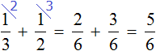
Можно представить поступивший в магазин виноград в виде шести гроздей. Тогда  винограда это две грозди,
винограда это две грозди,  винограда — три грозди, а винограда это пять гроздей из шести, проданные за два дня. Ну и нетрудно увидеть, что осталась одна гроздь, выраженная дробь (одна гроздь из шести)
винограда — три грозди, а винограда это пять гроздей из шести, проданные за два дня. Ну и нетрудно увидеть, что осталась одна гроздь, выраженная дробь (одна гроздь из шести)
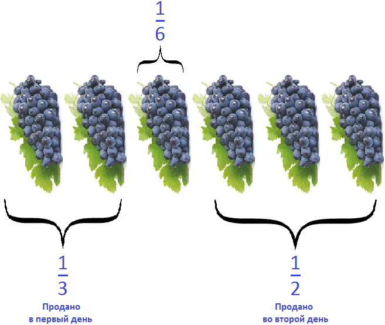
Задача 14. Вера в первый день прочитала
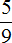
книги, а во второй день на меньше. Какую часть книги прочитала Вера во второй день? Успела ли она прочитать книгу за два дня?Решение
Определим часть книги, прочитанной во второй день. Сказано, что во второй день прочитано на меньше, чем в первый день. Поэтому из нужно вычесть
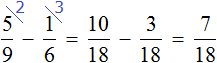
Во второй день Вера прочитала
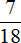
книги. Теперь ответим на второй вопрос задачи — успела ли Вера прочитать книгу за два дня? Сложим то, что Вера прочитала в первый и во второй день: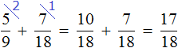
За два дня Вера прочитала
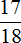
книги, но осталось ещё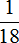
книги. Значит Вера не успела прочитать всю книгу за два дня.Сделаем проверку. Предположим что книга, которую читала Вера, имела 180 страниц. В первый день она прочла книги. Найдем от 180 страниц
180 : 9 × 5 = 100 (страниц)
Во второй день Вера прочитала на меньше, чем в первый. Найдем от 180 страниц, и вычтем полученный результат из 100 листов, прочитанных в первый день
180 : 6 × 1 = 30 × 1 = 30 (страниц)
100 − 30 = 70 (страниц во второй день)
Проверим, являются ли 70 страниц частью книги:
180 : 18 × 7 = 10 × 7 = 70 (страниц)
Теперь ответим на второй вопрос задачи — успела ли Вера прочитать все 180 страниц за два дня. Ответ — не успела, поскольку за два дня она прочла только 170 страниц
100 + 70 = 170 (страниц)
Осталось прочесть еще 10 страниц. В задаче в роли остатка у нас была дробь . Проверим являются ли 10 страниц частью книги?
180 : 18 × 1 = 10 × 1 = 10 (страниц)
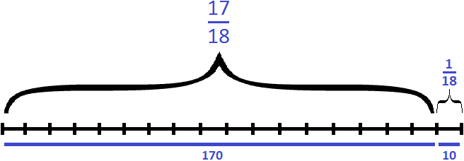
Задача 15. В одном пакете  кг, а в другом на
кг, а в другом на  кг меньше. Сколько килограммов конфет в двух пакетах вместе?
кг меньше. Сколько килограммов конфет в двух пакетах вместе?
Решение
Определим массу второго пакета. Она на  кг меньше, чем масса первого пакета. Поэтому из массы первого пакета вычтем массу второго:
кг меньше, чем масса первого пакета. Поэтому из массы первого пакета вычтем массу второго:
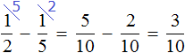
Масса второго пакета
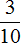
кг. Определим массу обоих пакетов. Сложим массу первого и массу второго: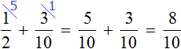
Масса обоих пакетов
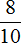
кг. А килограмма это 800 граммов. Можно решать такую задачу, работая с дробями, складывая и вычитая их. Также можно сначала найти число по данным в задаче дробям и приступить к решению. Так1000 : 2 × 1 = 500 × 1 = 500 г
1000 : 5 × 1 = 200 × 1 = 200 г
Во втором пакете на 200 граммов меньше, поэтому чтобы определить массу второго пакета, нужно из 500 г вычесть 200 г
500 − 200 = 300 г
Ну и напоследок сложить массы обоих пакетов:
500 + 300 = 800 г
Задача 16. Туристы прошли путь от турбазы до озера за 4 дня. В первый день они прошли  всего пути, во второй оставшегося пути, а в третий и четвертый дни проходили по 12 км. Чему равна длина всего пути от турбазы до озера?
всего пути, во второй оставшегося пути, а в третий и четвертый дни проходили по 12 км. Чему равна длина всего пути от турбазы до озера?
Решение
В задаче сказано, что во второй день туристы прошли оставшегося пути. Дробь означает, что оставшийся путь разделен на 7 равных частей, из них туристы прошли три части, но осталось пройти остальные . На эти приходится то расстояние, которое туристы прошли в третий и четвертый день, то есть 24 км (по 12 км в каждом дне). Нарисуем наглядную схему, иллюстрирующую второй, третий и четвертый дни:
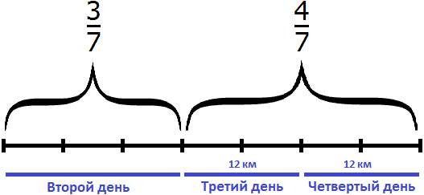
В третий и четвертый день туристы прошли 24 км и это составляет от пути, пройденного во второй, третий и четвертый дни. Зная, что составляют 24 км, мы можем найти весь путь, пройденный во второй, третий и четвертый день:
24 : 4 × 7 = 6 × 7 = 42 км
Во второй, третий и четвертый день туристы прошли 42 км. Теперь найдем от этого пути. Так мы узнаем сколько километров туристы прошли во второй день:
42 : 7 × 3 = 6 × 3 = 18 км
Теперь возвращаемся к началу задачи. Сказано, что в первый день туристы прошли всего пути. Весь путь разделен на четыре части, и на первую часть приходится путь, пройденный в первый день. А путь, который приходится на остальные три части, мы уже нашли — это 42 километра, пройденные во второй, третий и четвертый дни. Нарисуем наглядную схему, иллюстрирующую первый и остальные три дня:
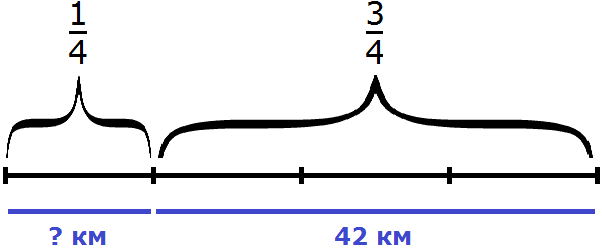
Зная, что  пути составляют 42 километра, мы можем найти длину всего пути:
пути составляют 42 километра, мы можем найти длину всего пути:
42 : 3 × 4 = 56 км
Значит длина пути от турбазы до озера составляет 56 километров. Сделаем проверку. Для этого сложим все пути, пройденные туристами в каждый из четырех дней.
Сначала найдем путь пройденный в первый день:
56 : 4 × 1 = 14 (в первый день)
14 + 18 + 12 + 12 = 56
56 = 56
Задача из арифметики известного среднеазиатского математика Мухаммеда ибн-Мусы ал-Хорезми (IX век н. э.)
«Найти число, зная, что если отнять от него одну треть и одну четверть, то получится 10»
Изобразим число, которое мы хотим найти, в виде отрезка, разделенного на три части. В первой части отрезка отметим треть, во второй — четверть, оставшаяся третья часть будет изображать число 10.
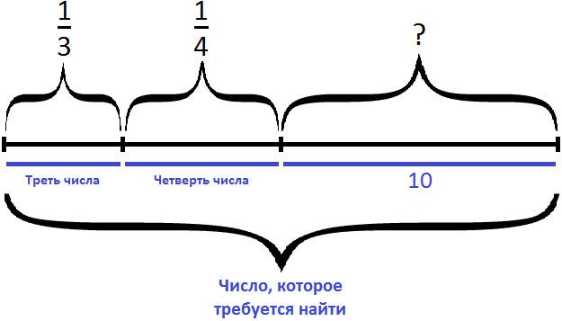
Сложим треть и четверть:
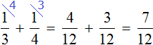
Теперь изобразим отрезок, разделенный на 12 частей. Отметим на нем дробь
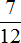
, остальные пять частей пойдут на число 10: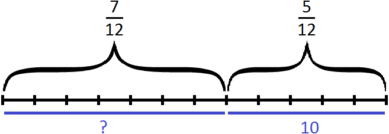
Зная, что пять двенадцатых числа составляют число 10, мы можем найти всё число:
10 : 5 × 12 = 2 × 12 = 24
Мы нашли всё число — оно равно 24.
Эту задачу можно решить не приводя рисунков. Для этого, сначала нужно сложить треть и четверть. Затем из единицы, которая играет роль неизвестного числа, вычесть результат сложения трети и четверти. Затем по полученной дроби определить всё число:
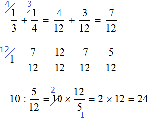
Задача 17. Семья, состоящая из четырех человек, в месяц зарабатывает 80 тысяч рублей. Бюджет распланирован следующим образом:
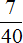
на еду,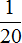
на коммунальные услуги, на Интернет и ТВ,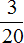
на лечение и походы по врачам,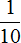
на пожертвование в детский дом, на проживание в съемной квартире,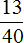
в копилку. Сколько денег выделено на еду, коммунальные услуги, на Интернет и ТВ, на лечение и походы по врачам, пожертвование на детский дом, на проживание в съемной квартире, и на копилку?Решение
80 : 40 × 7 = 14 (тыс. на еду)
80 : 20 × 1 = 4 × 1 = 4 тыс. (на коммунальные услуги)
80 : 20 × 1 = 4 × 1 = 4 тыс. (на Интернет и ТВ)
80 : 20 × 3 = 4 × 3 = 12 тыс. (на лечение и походы по врачам)
80 : 10 × 1 = 8 × 1 = 8 тыс. (на пожертвование в детский дом)
80 : 20 × 3 = 4 × 3 = 12 тыс. (на проживание в съемной квартире)
80 : 40 × 13 = 2 × 13 = 26 тыс. (в копилку)
Проверка
14 + 4 + 4 + 12 + 8 + 12 + 26 = 80
80 = 80
Задача 18. Туристы во время похода за первый час прошли
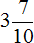
км, а за второй на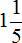
км больше. Сколько километров прошли туристы за два часа?Решение
Найдем числа по дробям. это три целых километра и семь десятых километра, а семь десятых километра это 700 метров:
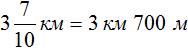
это один целый километр и одна пятая километра, а одна пятая километра это 200 метров
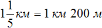
Определим длину пути, пройденного туристами за второй час. Для этого к 3 км 700 м нужно прибавить 1 км 200 м
3 км 700 м + 1 км 200 м = 3700м + 1200м = 4900м = 4 км 900 м
Определим длину пути, пройденного туристами за два часа:
3 км 700 м + 4 км 900 = 3700м + 4900м = 8600м = 8 км 600 м
Значит за два часа туристы прошли 8 километров и еще 600 метров. Решим эту задачу с помощью дробей. Так её можно значительно укоротить
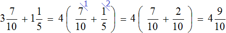
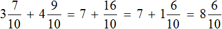
Получили ответ километра. Это восемь целых километров и шесть десятых километра, а шесть десятых километра это шестьсот метров
Задача 19. Геологи прошли долину, расположенную между горами, за три дня. В первый день они прошли  , во второй
, во второй  всего пути и в третий оставшиеся 28 км. Вычислить длину пути, проходящего по долине.
всего пути и в третий оставшиеся 28 км. Вычислить длину пути, проходящего по долине.
Решение
Изобразим путь в виде отрезка, разделенного на три части. В первой части отметим  пути, во второй части
пути, во второй части  пути, в третьей части оставшиеся 28 километров:
пути, в третьей части оставшиеся 28 километров:
Сложим части пути, пройденные в первый и во второй день:
За первый и второй дни геологи прошли всего пути. На остальные пути приходятся 28 километров, пройденные геологами в третий день. Зная, что 28 километров это всего пути, мы можем найти длину пути, проходящего по долине:
28 : 4 × 9 = 7 × 9 = 63 км
Проверка
63 : 9 × 5 = 7 × 5 = 35
63 : 9 × 4 = 7 × 4 = 28
35 + 28 = 63
63 = 63
Задача 20. Для приготовления крема использовали сливки, сметану и сахарную пудру. Сметану и сливки составляют 844,76 кг, а сахарная пудра и сливки 739,1 кг. Сколько в отдельности сливок, сметаны и сахарной пудры содержится в 1020,85 кг крема?
Решение
сметана и сливки — 844,76 кг
сахарная пудра и сливки — 739,1 кг
Вытащим из 1020,85 кг крема сметану и сливки (844,76 кг). Так мы найдем массу сахарной пудры:
1020,85 кг — 844,76 кг = 176,09 (кг сахарной пудры)
Вытащим из сахарной пудры и сливок сахарную пудру (176,09 кг). Так мы найдем массу сливок:
739,1 кг — 176,09 кг = 563,01 (кг сливок)
Вытащим сливки из сметаны и сливок. Так мы найдем массу сметаны:
844,76 кг — 563,01 кг = 281,75 (кг сметаны)
176,09 (кг сахарная пудра)
563,01 (кг сливки)
281,75 (кг сметана)
Проверка
176,09 кг + 563,01 кг + 281,75 кг = 1020,85 кг
1020,85 кг = 1020,85 кг
Задача 21. Масса бидона, заполненного молоком равна 34 кг. Масса бидона, заполненного наполовину, равна 17,75 кг. Какова масса пустого бидона?
Решение
Вычтем из массы бидона, заполненного молоком, массу бидона заполненного наполовину. Так мы получим массу содержимого бидона, заполненного наполовину, но уже без учета массы бидона:
34 кг − 17,75 кг = 16,25 кг
16,25 это масса содержимого бидона заполненного наполовину. Умножим эту массу на 2, получим массу бидона заполненного полностью:
16,25 кг × 2 = 32,5 кг
32,5 кг это масса содержимого бидона. Чтобы вычислить массу пустого бидона, нужно из 34 кг вычесть массу его содержимого, то есть 32,5 кг
34 кг − 32,5 кг = 1,5 кг
Ответ: масса пустого бидона составляет 1,5 кг.
Задача 22. Сливки составляют 0,1 массы молока, а сливочное масло составляет 0,3 массы сливок. Сколько сливочного масла можно получить из суточного надоя коровы, равного 15 кг молока?
Решение
Определим сколько килограмм сливок можно получить с 15 кг молока. Для этого найдем 0,1 часть от 15 кг.
15 × 0,1 = 1,5 (кг сливок)
Теперь определим сколько сливочного масла можно получить с 1,5 кг сливок. Для этого найдем 0,3 часть от 1,5 кг
1,5 кг × 0,3 = 0,45 (кг сливочного масла)
Ответ: из 15 кг молока можно получить 0,45 кг сливочного масла.
Задача 23. 100 кг клея для линолеума содержат 55 кг асфальта, 15 кг канифоли, 5 кг олифы и 25 кг бензина. Какую часть этого клея образует каждая из его составляющих?
Решение
Представим, что 100 кг клея как 100 частей. Тогда на 55 частей приходится асфальт, на 15 частей — канифоль, на 5 частей — олифа, на 25 частей — бензин. Запишем эти части в виде дробей, и по возможности сократим получающиеся дроби:
Ответ: клея составляет асфальт, составляет канифоль, составляет олифа,  составляет бензин.
составляет бензин.
Задачи для самостоятельного решения
Решение
Ответ: масса двух пакетов вместе составляет 1 кг 300 г
Решение
Второй способ
Ответ: театральное представление длилось 2 часа 10 минут.
 всего расстояния, которое он должен пройти, во второй
всего расстояния, которое он должен пройти, во второй  всего пути, а в третий оставшуюся часть пути. Какую часть всего расстояния прошел лыжник в третий час?
всего пути, а в третий оставшуюся часть пути. Какую часть всего расстояния прошел лыжник в третий час?Решение
Определим часть пути, пройденного лыжником за два часа движения. Для этого сложим дроби, выражающие пути пройденные за первый и второй час:
Определим часть пути, пройденного лыжником за третий час. Для этого из всех частей вычтем часть пути, пройденного за первый и второй час движения:
Ответ: в третий час лыжник прошел всего расстояния.
часть вошла в футбольную команду,  часть в баскетбольную, часть состязалась по прыжкам в длину, остальные учащиеся класса – в бегу. На какую часть бегунов было больше (или меньше), чем футболистов? баскетболистов?
часть в баскетбольную, часть состязалась по прыжкам в длину, остальные учащиеся класса – в бегу. На какую часть бегунов было больше (или меньше), чем футболистов? баскетболистов?Решение
Определим часть школьников, которые участвовали в футболе, баскетболе и в прыжках:
Определим часть школьников, которые участвовали в беге:
Узнаем на какую часть бегунов больше (или меньше) чем футболистов. Для начала сравним дроби и
Требовалось узнать на какую часть бегунов больше (или меньше) чем футболистов. Мы выяснили, что бегунов меньше, чем футболистов. Выясним на какую часть их меньше:
Бегунов меньше, чем футболистов на часть.
Теперь узнаем на какую часть бегунов больше (или меньше) чем баскетболистов. Для начала сравним дроби и
Требовалось узнать на какую часть бегунов больше (или меньше) чем баскетболистов. Мы выяснили, что бегунов больше, чем баскетболистов. Выясним на какую часть их больше:
Бегунов больше, чем баскетболистов на часть.
Ответ: бегунов было на часть меньше, чем футболистов и на часть больше, чем баскетболистов.
Задача 5. На выставке художественных работ представлена живопись, скульптура и графика.  всех работ составляет скульптура, – живопись, оставшуюся часть – графика. Какую часть всех работ составляет графика?
всех работ составляет скульптура, – живопись, оставшуюся часть – графика. Какую часть всех работ составляет графика?
Решение
Сложим дроби, выражающие скульптуру и живопись:
Определим какую часть всех работ составляет графика:
Ответ: всех работ составляет графика.
Задача 6. Рабочие отремонтировали дорогу длиной 820 м за три дня. Во вторник они отремонтировали этой дороги, а в среду  оставшейся части. Сколько метров дороги отремонтировали рабочие в четверг?
оставшейся части. Сколько метров дороги отремонтировали рабочие в четверг?
Решение
Определим длину дороги, отремонтированной во вторник:
820 : 5 × 2 = 328 м
Определим длину дороги, отремонтированной в среду. Известно, что в этот день рабочие отремонтировали оставшейся дороги. Оставшаяся дорога это 820−328, то есть 492
492 : 3 × 2 = 328 м
Определим длину дороги, отремонтированной в четверг. Для этого вычтем из 820 длины дорог, отремонтированных во вторник и в среду:
820 − (328 + 328) = 820 − 656 = 164 м
Ответ: в четверг рабочие отремонтировали 164 метра дороги.
Задача 7. В книге три рассказа. Наташа прочла первый рассказ за ч, на чтение второго рассказа она потратила на ч больше, а чтение третьего рассказа заняло на ч меньше, чем чтение первого и второго рассказов вместе. Сколько времени ушло у Наташи на чтение всей книги?
Решение
Определим время за которое Наташа прочитала первый рассказ. Она прочила его за треть часа. Треть часа это 20 минут
60 : 3 × 1 = 20 минут
Определим время за которое Наташа прочитала второй рассказ. Она прочила его на ч больше. часа это 10 минут. Прибавим к 20 минутам 10 минут, получим время чтения второго рассказа:
20 + 10 = 30 минут
Определим время за которое Наташа прочитала третий рассказ. Она прочитала его на ч меньше, чем чтение первого и второго рассказов вместе. часа это 35 минут. Вычтем 35 из времени, затраченного на чтение первого и второго рассказа вместе (50 м)
50 − 35 = 15 м
Определим сколько времени ушло у Наташи на чтение всей книги:
20 + 30 + 15 = 65 минут = 1 ч 5 минут
На чтение всей книги у Наташи ушел 1 час и 5 минут. Решим эту задачу с помощью дробей. Так ее можно значительно укоротить:
это один целый час и часа, а одну двенадцатую часа составляют 5 минут.
Ответ: на чтение всей книги у Наташи ушло
Задача 8. Из одной тонны хлопка-сырца можно изготовить 3400 м ткани, 1,05 ц пищевого масла и 0,225 т жмыха. Сколько метров ткани, пищевого масла и жмыха можно получить из 32,4 ц хлопка-сырца?
Решение
Переведем 32,4 ц в тонны. Одна тонна составляет 10 центнеров. Чтобы узнать сколько таких десять центнеров (имеется ввиду тонн) в 32,4 центнерах, нужно 32,4 разделить на 10
32,4 : 10 = 3,24 т
Определим сколько метров ткани можно получить с 3,24 тонн хлопка-сырца. С одной тонны, как указано в задаче, получается 3400 метров ткани. А с 3,24 тонн будет получено в 3,24 раза больше ткани
3400 × 3,24 = 11016 метров ткани.
Определим сколько пищевого масла можно получить с 3,24 тонн хлопка-сырца. С одной тонны, как указано в задаче, получается 1,05 ц пищевого масла. А с 3,24 тонн будет получено в 3,24 раза больше масла
1,05 × 3,24 = 3,402 центнера пищевого масла
Определим сколько жмыха можно получить с 3,24 тонн хлопка-сырца. С одной тонны, как указано в задаче, получается 0,225 т жмыха. А с 3,24 тонн будет получено в 3,24 раза больше жмыха
0,225 × 3,24 = 0,729 тонн жмыха
Ответ: из 32,4 ц хлопка сырца можно получить 11016 метров ткани, 3,402 ц пищевого масла и 0,729 т жмыха.
Решение
Зная, что 0,2 всего пути составляют 12 км, мы можем найти весь путь. Чтобы найти неизвестное число по десятичной дроби, нужно известное число разделить на десятичную дробь
12 : 0,2 = 60 км
Ответ: Туристы прошли 60 км.
Решение
Зная, что 0,7 книги составляют 56 страниц, мы можем узнать сколько всего страниц в книге. Чтобы найти неизвестное число по десятичной дроби, нужно известное число разделить на десятичную дробь
56 : 0,7 = 80 (страниц всего)
Узнаем сколько осталось прочитать
80 − 56 = 24 (страницы осталось прочитать)
Ответ: в книге 80 страниц. Прочитать осталось еще 24 страницы.
зданий в городе составляют жилые дома. из них — многоэтажные. Какую часть всех зданий в городе составляют многоэтажные жилые дома?Решение
Разделим жилых домов на три части:
Теперь на треть многоэтажных домов приходится всех зданий. Изначально все здания были разделены на три равные части. Теперь они разделены на девять равных частей. Жилые дома, которые ранее выражались дробью , теперь выражаются дробью
Чтобы узнать сколько многоэтажных домов приходится на две трети, умножим на 2
Ответ: жилые многоэтажные дома составляют всех зданий в городе.
м, нужно отрезать  м. Как это сделать, не производя измерений?
м. Как это сделать, не производя измерений?Решение
Изобразим схематически один метр веревки:
Выделим на этом рисунке метра:
Здесь же выделим метра
Не выделенным на м остался один кусочек. Узнаем, что это за кусочек. Для этого из вычтем
м это часть веревки, которую нужно отрезать. Тогда мы получим м веревки.
Теперь осталось узнать сколько раз м содержит м
Значит, чтобы не производя измерений от м веревки отрезать м, нужно эту веревку сложить вчетверо и отрезать одну часть. Оставшаяся часть и будет половиной от одного метра.
Ответ: чтобы от веревки, длина которой м отрезать м, нужно сложить эту веревку вчетверо и отрезать от неё одну часть. Оставшаяся часть станет м веревки.